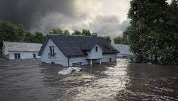

Calentamiento global: estudio advierte que nivel del mar aumentará hasta un pie para 2050
Un nuevo estudio realizado por la Administración Nacional de Aeronáutica y el Espacio (NASA) y la Oficina Nacional de Administración Oceánica y Atmosférica (NOAA) proyecta que el aumento en el nivel del mar en los próximos 30 años será igual al visto en los pasados 100 años. "Muchas áreas en la zona de Venice y Marina del Rey se van a ver impactadas porque allí no hay una elevación suficiente para poder protegerse de estos impactos negativos que vamos a tener en el futuro", advierte Frankie Orrala, de la organización Heal the Bay.